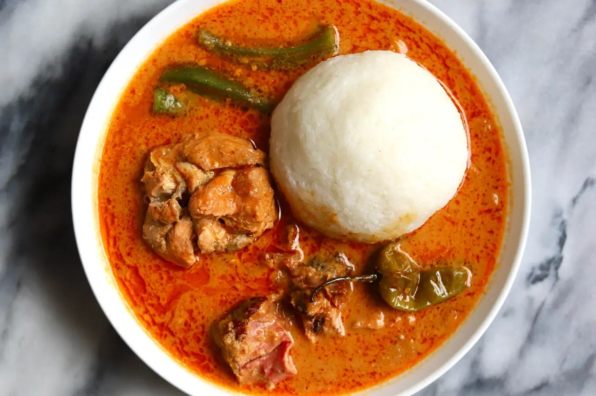

Ghanaian rice balls served with groundnut soup is a rich,hearty, and deeply satisfying traditional dish.
The rice balls are made by pounding cooked rice into a smooth, stretchy dough-like form, then shaped into soft,firm balls that are perfect for dipping.
The groundnut soup is creamy and flavorful, prepared from roasted peanuts blended into a thick base and cooked with tomatoes, onions, spices, and palm oil to create a rich, nutty taste.
The soup is enhanced with tender pieces of chicken and assorted meat, which absorb the spices and add depth to every bite.
This combination delivers a perfect balance of creaminess, spice, and protein, making it a popular comfort food enjoyed across Ghana,
especially during family gatherings and special occasions.